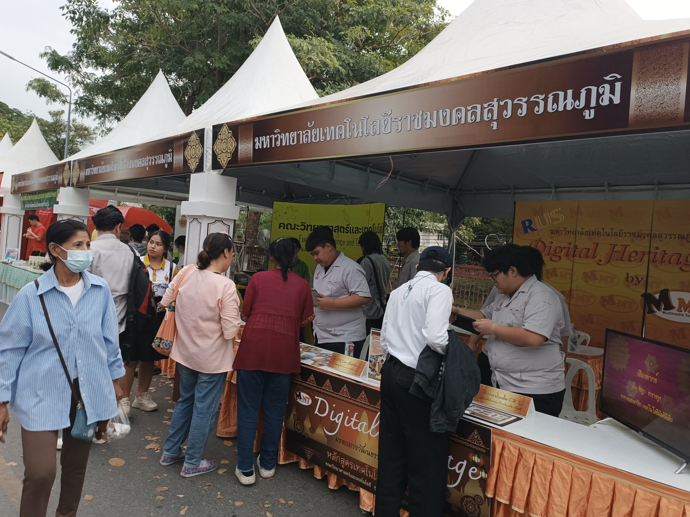
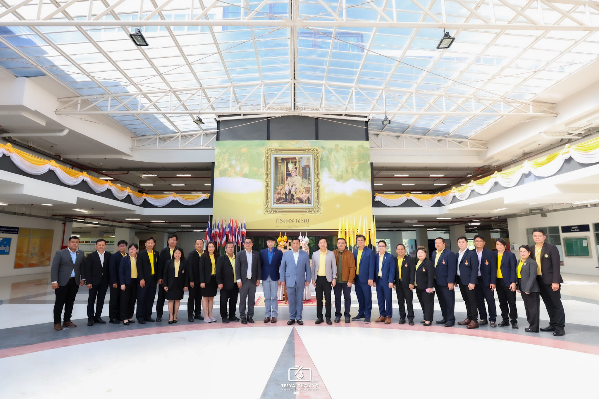

นำเสนอผลงานของสาขาวิชา ใน Theme Digital Heritage
13-22 ธ.ค.2567 คณาจารย์และนักศึกษา สาขาวิชาเทคโนโลยีมัลติมีเดีย มทร.สุวรรณภูมิ ศูนย์พระนครศรีอยุธยา หันตรา ได้นำเสนอผลงานของสาขาวิชา ใน Theme : Digital Heritage มรดกทางวัฒนธรรม สู่นวัตกรรมดิจิทัล ในงานยอยศยิ่งฟ้า อยุธยามรดกโลก ในบูทจัดแสดงของมหาวิทยาลัยเทคโนโลยีราชมงคลสุวรรณภูมิ โดยได้รับความสนใจจากผู้มาเที่ยวชมงาน
 อ่านเพิ่มเติมคณาจารย์และนักศึกษาหลักสูตรเทคโนโลยีมัลติมีเดีย ได้ต้อนรับและนำเสนอผลงาน Digital Heritage
21 พ.ย.2567 คณาจารย์และนักศึกษาหลักสูตรเทคโนโลยีมัลติมีเดีย ได้ต้อนรับและนำเสนอผลงาน Digital Heritage : มรดกทางวัฒนธรรม สู่นวัตกรรมดิจิทัล กับผู้บริหารและคณะกรรมการสถาบันมรดกสยามเพื่อการเรียนรู้ตลอดชีวิต นำโดยท่านชายวัชเรศร วิวัชรวงศ์ (ท่านอ้น) ประธานที่ปรึกษากิตติมศักดิ์สถาบันฯ ขอขอบคุณ มหาวิทยาลัยเทคโนโลยีราชมงคลสุวรรณภูมิ ที่เปิดโอกาสในการนำเสนอผลงานของคณาจารย์และนักศึกษาในสาขาวิชาจนได้รับคำชื่นชมจากหน่วยงานภายนอก
 อ่านเพิ่มเติมนักศึกษา เทคโนโลยีมัลติมีเดีย ได้รับรางวัลชนะเลิศ Mr. Library และ ได้รับรางวัลรองชนะเลิศ Miss Library
ขอแสดงความยินดีกับนักศึกษาสาขาวิชาเทคโนโลยีมัลติมีเดีย คณะวิทยาศาสตร์และเทคโนโลยี ศูนย์หันตรา นายธนชัย คำสมมาตร์ ได้รับรางวัลชนะเลิศ Mr. Library และ น.ส.อักษราภัค พิลา ได้รับรางวัลรองชนะเลิศ Miss Library จัดการประกวดโดย สำนักวิทยบริการและเทคโนโลยีสารสนเทศ มทร.สุวรรณภูมิ
อ่านเพิ่มเติมโครงการทุนการศึกษา โรงเรียนแนวท่อส่งก๊าซธรรมชาติ ปี 2567
วันที่ 20 กันยายน 2567 อาจารย์สัญญา คำจริง รองอธิการบดี, ผศ.อำนาจ สุขแจ่ม ผู้ช่วยอธิการบดี, ผศ.ดร.เจษฎา จันทร์ผา คณบดีคณะวิทยาศาสตร์และเทคโนโลยี, ดร.สัมพันธ์ สุกใส คณบดีคณะศิลปศาสตร์ และนางสาวชวนพิศ เปรมกมล ผู้อำนวยการกองพัฒนานักศึกษา พร้อมด้วยคณาจารย์ เจ้าหน้าที่ ร่วมเป็นสักขีพยาน โครงการทุนการศึกษา โรงเรียนแนวท่อส่งก๊าซธรรมชาติ ปี 2567 โดย นายวิมล ทีประเสริฐ ผู้จัดการแผนกบริหารศูนย์ปฏิบัติการระบบท่อส่งก๊าซเขต 11 โดยมีนักศึกษาได้รับคัดเลือกให้รับทุน ทุนละ 10,000 บาท จำนวน 2 ทุน รวม 20,000 บาท
อ่านเพิ่มเติม